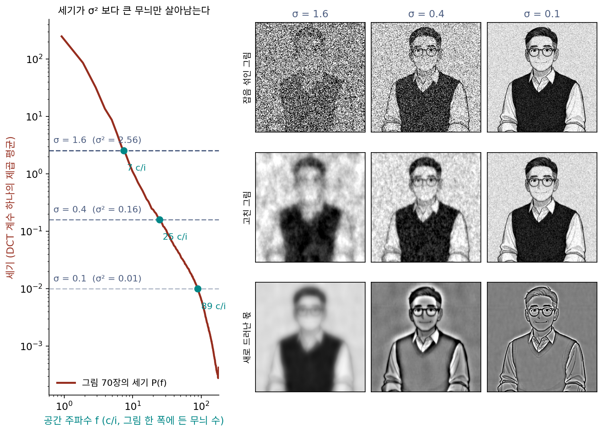

잡음을 맞히는 신경망: DDPM과 잡음 제거 스코어 매칭
이 장의 물음
수리공의 걸음으로 순수한 잡음에서 새 숫자를 만들었고, 그 걸음은 잡음 섞인 분포의 바늘, 곧 스코어 쪽으로 거꾸로 흐르는 걸음의 한 어림이었다. 잡음은 가는 무늬부터 덮고 굵은 무늬를 오래 남긴다는 것도 보았다. 그런데 이 셋은 아직 따로따로 본 그림이다. 수리공이 잡음 크기를 한 단계 줄일 때마다 실제로 고치는 것은 그림의 어느 부분일까?
바늘을 계산할 수 있었던 것은 장난감의 데이터 분포를 식으로 알았기 때문이다. 실제로 손에 있는 것은 그림 몇만 장뿐이다. 잡음 섞인 그림들의 분포도, 그 분포의 기울기도 모른다. 복원기는 깨끗한 그림에 일부러 잡음을 섞어 정답이 분명한 짝을 만들어 배웠다. 바늘은 정답을 아무도 모르는데, 같은 방법이 통할까? 이 장은 다음 물음에 차례로 답한다.
- 잡음 수준마다 가장 좋은 복원기가 되살리는 것은 그림의 어느 대역일까?
- 정답 방향을 모르는데, 신경망에게 무엇을 맞히라고 시켜야 그 방향을 배울까?
- 방향을 직접 맞히는 것과, 섞은 잡음을 맞히는 것은 같은 일일까? 다르다면 어느 쪽이 배우기 쉬울까?
- VAE를 배울 때 올리던 「그림이 나올 확률의 아래쪽 경계」는 이 학습과 무슨 관계일까?
- 잡음 수준이 여럿이면, 수준마다 오차에 어떤 비중을 줘야 할까?
디퓨전: 대역별로 나눠 여러 번 디노이징
수리공은 잡음 크기를 3에서 0.02까지 줄이며 수십 번 고쳤다. 숫자 그림에서는 큰 잡음일 때 어느 숫자가 될지와 큰 꼴이, 작은 잡음일 때 획의 가장자리가 정해지는 것을 눈으로 보았다. 그렇다면 단계마다 맡는 일은 정말 나뉘어 있을까? 잡음 크기가 정해지면 그 단계에서 고칠 수 있는 무늬와 고칠 수 없는 무늬의 경계는 어디일까? 학습한 신경망의 속은 들여다보기 어려우니, 속을 식으로 다 적을 수 있는 가장 단순한 복원기에서 재 보자.
역사: 잡음 속에서 신호를 거르는 가장 좋은 필터
1942년 MIT 의 수학자 노버트 위너(Norbert Wiener)는 미국 국방연구위원회의 일로 대공포의 조준을 연구했다. 레이더가 잰 비행기의 자리는 잡음에 흔들렸고, 그 흔들리는 기록에서 참 자리를 가장 잘 짐작해야 했다. 위너는 신호와 잡음이 주파수마다 얼마의 세기를 가지는지만 알면, 제곱 오차를 가장 작게 하는 거르기를 식 하나로 적을 수 있음을 보였다. 이 결과는 1942년 2월 기밀 보고서로 돌다가 1949년에야 책 『정상 시계열의 외삽, 내삽, 평활(Extrapolation, Interpolation, and Smoothing of Stationary Time Series)』으로 나왔다. 섀넌(Claude Shannon)은 이 일을 통신 이론을 통계의 문제로 세운 첫 분명한 정식화로 꼽았다고 전해진다. 이 거르기가 위너 필터다.
정규분포 그림의 가장 좋은 복원기
그림들을 「공간 주파수마다 세기만 정해진 정규분포」로 보면, 잡음 섞인 그림이 나올 수 있었던 원래 그림들의 평균, 곧 제곱 오차로 끝까지 배운 복원기의 답을 식으로 적을 수 있다. 실제 그림은 정규분포가 아니지만, 이 복원기가 대역을 다루는 방식이 뼈대를 보여 준다. 그림을 무늬마다의 계수(DCT)로 적으면, 계수마다 따로 배율 하나를 곱하는 것이 답이다.
등장인물 그림 70장(256 × 256 흑백, 밝기 0~1)으로 P(f)를 재면 대략 f의 −2.22제곱으로 준다. 배율 g는 세기가 σ² 보다 훨씬 큰 굵은 무늬에서 1에 가깝고(그대로 둔다), 훨씬 작은 가는 무늬에서 0에 가깝다(평균인 0으로 지운다). 그 사이의 경계, 곧 P(f) = σ² 이라 배율이 꼭 ½ 인 공간 주파수를 f*라 하자.
| σ | 1.6 | 0.8 | 0.4 | 0.2 | 0.1 |
|---|---|---|---|---|---|
| 경계 f* (c/i) | 7.4 | 12.6 | 24.7 | 48.7 | 89.2 |
선생님 그림에 σ = 0.4 의 잡음을 섞으면 칸당 제곱 오차가 0.16인데, 이 복원기로 고치면 0.0111이다. 고친 그림에는 원래 그림 세기의 87.6%가 돌아오고, 빠진 몫은 경계 위의 가는 무늬다. 수리공처럼 σ를 반으로 줄이는 한 단계에서 배율이 가장 많이 오르는 공간 주파수는 0.8 → 0.4 에서 17 c/i, 0.4 → 0.2 에서 35 c/i, 0.2 → 0.1 에서 68 c/i 다. 단계 하나가 대역 하나를 맡아, 그 잡음 수준에서 막 잡음 위로 떠오른 무늬를 채운다. 단계마다 새로 드러난 몫을 그리면 굵기 순서로 쌓은 대역 그림(라플라시안 피라미드)과 닮았다.

이렇게 잡음 크기를 큰 값에서 작은 값으로 줄이며 디노이징을 여러 번 되풀이해, 단계마다 그 잡음 수준에서 막 드러나는 대역을 채워 그림을 만드는 모델을 디퓨전 모델 (잡음이 퍼지는 과정을 거꾸로 걸으며 대역별로 여러 번 디노이징하는 생성 모델 / diffusion model)이라 한다. 「디퓨전」(퍼짐)이라는 이름은 잡음이 섞이며 분포가 퍼지는 쪽에서 왔고, 그림을 만드는 쪽은 그 퍼짐을 거꾸로 걷는다.
ML에서: 주파수 축의 자기회귀
2024년 구글 딥마인드의 딜레만(Sander Dieleman)은 블로그 글 「디퓨전은 스펙트럼 자기회귀다(Diffusion is spectral autoregression)」에서 같은 계산을 실제 사진으로 했다. 자연 사진의 세기 스펙트럼은 지수가 2 근처인 거듭제곱 꼴을 따르고, 잡음을 더하는 일은 높은 주파수를 잡음에 묻어 낮은 주파수만 남기는 거르기처럼 작용한다. 그래서 그림 디퓨전 모델은 주파수 축에서 굵은 무늬부터 차례로, 앞에서 정한 것을 받아 다음 것을 그리는 자기회귀에 가까운 일을 한다는 것이다. 그는 이 읽기가 소리 파형에는 들어맞지 않는다고도 적었다. 소리의 스펙트럼은 주파수를 따라 한쪽으로만 줄지 않기 때문이다.
문제 1. 시끄러운 카페에서 듣는 친구 목소리
친구 목소리의 세기가 저음 대역에서 100, 중음 대역에서 10, 고음 대역에서 1이다(같은 단위). 카페 잡음은 세 대역 모두 세기가 N 으로 같다. 귀는 대역마다 「목소리 세기 ÷ (목소리 세기 + 잡음 세기)」만큼만 목소리로 믿고 듣는다고 하자. (가) N = 10 일 때 대역마다 믿는 몫은? (나) 손님이 빠져 N 이 1, 다시 0.1 로 줄면 어느 대역이 새로 또렷해지는가(믿는 몫이 0.9 근처로 오르는가)? (다) 시끄러운 카페에서 친구 말의 무엇이 먼저 들리고 무엇이 나중에 들리겠는가?

잡음이 10이면 세기가 10보다 작은 고음만 안 들리고, 저음이랑 중음은 다 들리겠죠.

중음은 목소리 10, 잡음 10이에요. 믿는 몫으로 계산해 봐요.

100/110 = 0.909, 10/20 = 0.5, 1/11 = 0.091이에요. 중음은 반만 믿어요. 경계에 걸려 있는 거예요.

(나)는 N = 1 이면 0.990, 0.909, 0.5라서 중음이 또렷해지고 고음이 반이 돼요. 0.1이면 고음도 0.909예요. 잡음이 10분의 1로 줄 때마다 대역이 하나씩 새로 들리네요.

(다)는 목소리의 높낮이나 억양 같은 저음 쪽이 먼저고, 「ㅅ」「ㅊ」처럼 쉭쉭거리는 고음 쪽 소리가 맨 나중이야. 시끄러운 데서 무슨 말을 하는지 분위기는 알겠는데 낱말 몇 개가 헷갈리는 게 그래서구나.
위의 그림이랑 같네요. 세기가 잡음보다 큰 대역만 남고, 잡음이 줄면 경계가 가는 쪽으로 한 칸씩 옮겨 가요.
문제 2. 잡음을 반으로 줄이면 경계는 몇 배로 가나
세기 스펙트럼이 P(f) = Af^(−γ) 꼴이라 하자(A, γ 는 양수). (가) 잡음 σ에서의 경계 f*(P(f*) = σ²)를 A, γ, σ로 적어라. σ를 반으로 줄이면 f*는 몇 배가 되는가? γ = 2, 2.22(위의 등장인물 그림), 2.86(얼굴 사진)에서 구하라. (나) σ를 σk에서 σk+1 = σk/2 로 한 단계 줄일 때, 배율이 오르는 몫 g(f, σk+1) − g(f, σk)은 세기가 얼마인 무늬에서 가장 크고, 그 크기는 얼마인가? (다) 1 c/i 부터 128 c/i 까지 일곱 옥타브를 경계가 모두 한 번씩 지나가게 하려면 σ를 몇 배의 범위에 걸쳐 줄여야 하는가? γ = 2 와 2.86 에서 구하라.
(가)는 Af^(−γ) = σ²에서 f* = (A/σ²)^(1/γ)예요. σ가 반이면 σ²는 4분의 1이니까… 경계는 4배요?

지수 1/γ 는 어디 갔어요?

아, 4의 1/γ 제곱이에요. γ = 2 면 2배, 딱 한 옥타브네요. 2.22면 1.87배, 2.86이면 1.62배예요. 가파르게 줄어드는 그림일수록 한 단계에 옮겨 가는 폭이 좁아요.
(나)는 무늬의 세기를 u 로 두고 u/(u + σk+1²) − u/(u + σk²)을 u 로 미분해서 0으로 놓으면 돼. u = σkσk+1, 두 잡음 크기를 곱한 자리에서 가장 크고, 그 값은 (σk − σk+1)/(σk + σk+1) = 1/3이야. γ 와 상관없이 언제나 1/3이고.

그래요. 한 단계가 한 무늬를 0에서 1로 단번에 바꾸지는 않아요. 경계 근처의 무늬를 3분의 1씩 끌어올리고, 이웃한 단계들이 그 일을 나눠 맡아요. (다)는요?
경계가 128배 옮겨 가려면 σ²는 128^γ 배, σ는 128^(γ/2) = 2^(7γ/2) 배예요. γ = 2 면 128배, 2.86이면 1,031배예요. 얼굴 사진처럼 가는 무늬가 약한 그림은 잡음 크기를 훨씬 넓은 범위로 훑어야 모든 대역을 지나가네요.
수리공이 잡음을 3에서 0.02까지, 150배나 줄인 게 그래서였구나. 대역마다 한 번씩은 들러야 하니까요.
문제 3. DDPM 의 1000걸음은 어느 대역에 쓰이나
DDPM 논문의 잡음 일정(한 걸음에 섞는 잡음의 분산이 0.0001에서 0.02로 곧게 늘어나는 1000걸음)은 픽셀 값을 −1 ~ 1 눈금으로 두고 xt = αtx₀ + σtε로 섞는다(논문은 32 × 32 그림에 썼다). 이 일정을 위의 256 × 256 등장인물 그림들에 그대로 쓴다고 하자. 신호로 나눈 잡음 크기 σt/αt는 t = 100 에서 0.339, 300 에서 1.234, 500 에서 3.424, 900 에서 60.27이다. (가) 밝기 0~1 눈금의 잡음 크기로 옮기면 얼마인가? (나) 그 걸음들의 경계 f*를 위의 표로 어림하라. (다) 1000걸음을 경계 f*가 놓인 옥타브별로 세면 아래와 같다. 무엇을 알 수 있는가?
f* (c/i) 1 아래 1~2 2~4 4~8 8~16 16~32 32~64 64~128 128 위 걸음 수 182 68 124 155 176 121 85 65 18
(가)는 σt를 그대로 쓰면 되죠. t = 100 이면 0.32요.
xt에서 그림은 αt배로 줄어 있어요. 그림의 무늬와 잡음을 견주려면 어느 쪽 눈금에 맞춰야 할까요?
그림 쪽을 원래 크기로 돌려야 하니까 αt로 나눈 σt/αt를 써야 하네요. 그리고 −1 ~ 1 눈금은 0~1 눈금을 두 배로 늘린 거라 2로 나눠요. 0.169, 0.617, 1.71, 30.1이에요.
(나)는 0.169가 표의 0.2와 0.1 사이니까 50~90 c/i 쯤, 0.617은 0.8과 0.4 사이라 13~25 c/i 쯤, 1.71은 1.6 근처라 7 c/i 쯤이야. 30.1이면 세기가 가장 센 1 c/i 무늬도 잡음에 묻혀. 세기 곡선으로 직접 계산하면 57, 15.7, 6.9 c/i 이고, t = 900 은 1 c/i 아래야.

(다)는요?

182걸음, 거의 5분의 1이 그림 평균 밝기 말고는 아무것도 드러나지 않는 잡음 속에서 걸어요. 가장 가는 옥타브(64~128 c/i)는 65걸음이고, 8~16 c/i 는 176걸음이에요. 잡음 일정이 곧 대역마다 걸음을 나눠 주는 표였네요.
그럼 같은 일정이라도 그림 크기가 바뀌면 대역마다 받는 걸음 수가 달라지겠네요. 32 × 32 그림에는 128 c/i 같은 무늬가 아예 없으니까요.
그래요. 일정을 어떻게 정해야 대역마다 걸음이 알맞게 돌아가는지는 따로 따져 볼 물음이에요. 오늘 본 건 일정을 「걸음마다 어느 대역을 고치나」로 읽을 수 있다는 것까지예요.